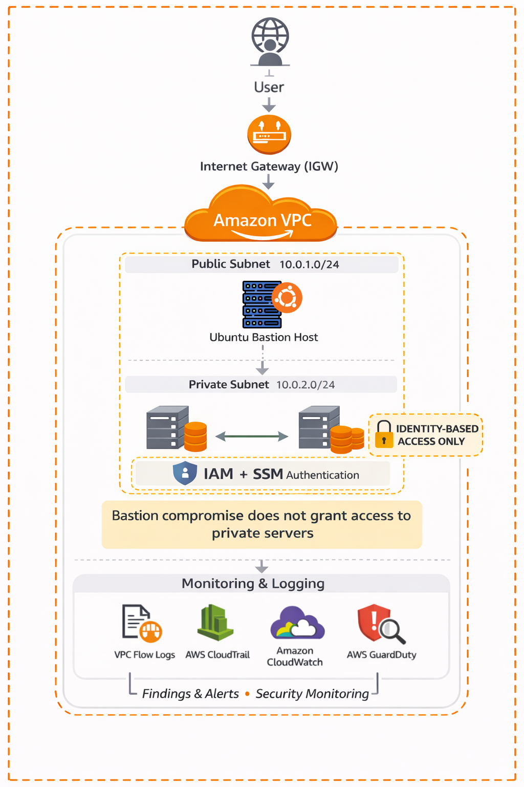

SSM Video Demonstration


Project Overview
This project demonstrates a secure AWS network architecture using a single VPC with strictly segmented public and private subnets. A hardened Ubuntu Bastion host in the public subnet serves as the sole administrative entry point, ensuring that private servers and databases remain completely isolated from the public internet.
By enforcing IAM-based authentication and leveraging AWS Systems Manager (SSM), the lab eliminates the risks associated with static SSH keys and open management ports. This defense-in-depth approach is further strengthened by continuous monitoring via VPC Flow Logs, CloudTrail, and GuardDuty.
AWS Resources Used
-
Virtual Private Cloud (VPC)
-
Public & Private Subnets
-
Internet & NAT Gateways
-
Ubuntu Bastion Host
-
IAM Roles & Policies
-
Systems Manager (SSM)
-
VPC Flow Logs & CloudWatch
-
AWS GuardDuty & CloudTrail
Project Outline
"For this project, I designed a secure AWS network architecture using an Amazon VPC to isolate infrastructure and control how traffic enters and moves through the environment. I created both public and private subnets so that only the necessary resources were exposed to the internet, while sensitive servers remained fully internal."
Expert Guidance Prompt
Project Milestones & Logs
VPC and subnets creation. Provisioned Elastic IP for the Bastion host.
Ubuntu Bastion setup completed. Deployed internal target servers.
Configured Internet Gateway and Public Routing Tables for the Bastion host.
Static routes and security group rules refined for private subnet isolation.
Configured IAM user permissions and CLI credentials for SSM-only access.
Successfully implemented IAM-enforced sign-in via Systems Manager.
Deployment of CloudWatch logs and VPC flow log metrics for auditing.
Finalized policy hardening for the SSM role and user access.
Verified connectivity across all Availability Zones and private subnets.
Performance testing and latency monitoring via CloudWatch dashboards.
Final project polishing, screenshot collection, and documentation completion.
Technical Roadmap & Next Steps
- ✓ Secure VPC & Subnet Segmentation
- ✓ Ubuntu Bastion Host Deployment
- ✓ IAM-Enforced SSM Session Management
- ✓ VPC Flow Logs & CloudWatch Integration
- ✓ GuardDuty & CloudTrail Auditing